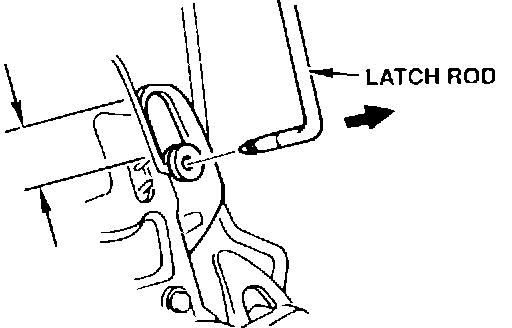
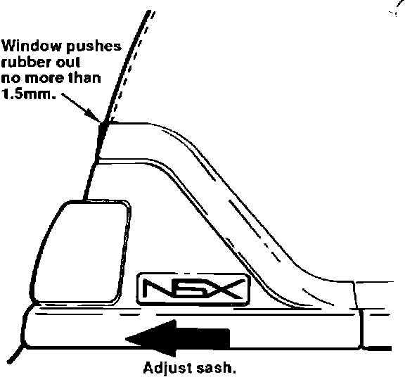
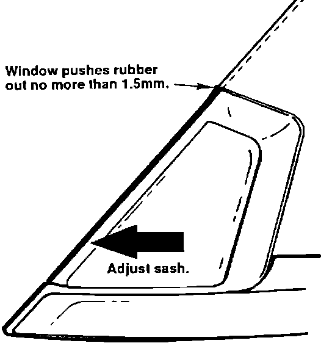

Window Sash Rubber - Torn
91acura01 January 7, 1991YEAR MODEL
1991 NSX
VIN APPLICATION BULLETIN NO.
Up to JH4NA1 ... MT000722
91-002
Torn Window Sash Rubber
SYMPTOM
Torn sash rubber at the front and/or rear of the side windows.
PROBABLE CAUSE
The sash holder assembly is adjusted too close to the window. In the closed position, the window stretches the sash rubber, causing it to tear.
CORRECTIVE ACTION
Replace the torn sash holder assemblies with the new units listed under PARTS INFORMATION. Adjust them to prevent future tearing.
1. Disassemble the door, following the first ten steps of the door disassembly procedure on page 20-6 of the Service Manual.
NOTE: Watch carefully when removing the eight screws in step 2 on page 20-6. Some or all may have washers behind them.
2. To replace the front sash holder assembly, remove the two mounting bolts and locknut. Count the number of tums it takes to remove the adjusting bolt from the sash. Remove the front sash from the door by pulling it straight up.
3. Install the new assembly. Keep the same alignment by screwing in the adjusting bolt the number of turns counted in step 2. Tighten the two mounting bolts and locknut.
4. To replace the rear sash holder assembly, remove the mounting bolt and locknut. Count the number of turns required to remove the adjusting bolt. Lift the assembly, then remove the latch rod.

NOTE: Examine the position of the plastic latch rod clip in the door latch before removing the rod.
5. Install the new assembly. Position the plastic latch rod clip in the same location. Keep the same alignment by screwing in the adjusting bolt the number of turns counted in step 4. Tighten the mounting bolt and locknut.
6. Close the door, then raise the window fully. Measure how far the weatherstrip overlaps the top of the window. If it is more than 2 mm, adjust the glass height to reduce it to 2 mm. Move the stopper plates as shown on Service Manual page 20-15.

7. Lower the window and open the door. Raise the window until it just contacts the rear sash rubber. Watch the rubber while you raise the window fully.
B. If the window pushes the sash rubber out more than 1.5 mm, adjust the sash so this bulge is no more than 1 mm. If necessary, file the mounting holes in the door to allow sufficient adjustment.

9. Repeat steps 7 and 8 for the front sash.
10. Reassemble the door. Check for wind and water leaks.
PARTS INFORMATION
Holder Assembly:
Right front P/N 72240-SL0-003
Right rear P/N 72242-SL0-003
Left front P/N 72280-SL0-003
Left rear P/N 72282-SL0-003
WARRANTY CLAIM INFORMATION
In warranty: The normal warranty applies.
Out-of-warranty: Any repair performed after warranty expiration may be eligible for goodwill consideration by the District Service Manager. You must request consideration, and get the DSM's decision, before starting work.
Operation numberi Left door 824135
Right door 825135
Flat rate time: 2.0 hours per door
Failed P/N: 72242-SL0-003
Defect code: 074
Contention code: A99